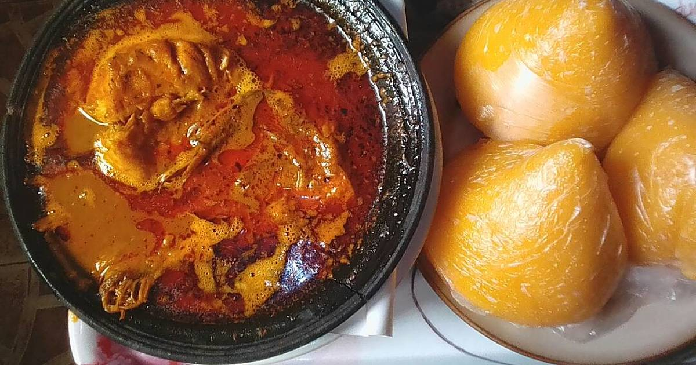

Banga soup

Description
Banga soup is a soup made from palm nut. Normally prepared in the
southern part of Nigeria. It normally goes with starch, but any other swallow
can go with it.
Ingredients:
- 1.5 Beef(or any other meat of choice)
- 1 large Onion(divided into 2 halves:chopped and the other half blended with the
peppers
- 1 Tablespoon Cameroun Pepper
- 1 Tablespoon seasoning powder
- 3 Medium Stockfish
- 1 can of Palm-nut extract
- 2 Scotch Bonnet
- 1 Tablespoon Banga Spices
- 1-2 Tablespoon Crushed obeletientien leaves or Dried bitter-leaves
- 1 Oburunbebe Stick
- 2 Medium Dried Fish - soaked in hot water and deboned
- 4-6 cups Stock
- 1 Tablespoon Grounded-crayfish
- Salt to taste
Steps:
- Rinse the meat, add the diced onions, Cameroon pepper, seasoning powder, and
salt. Stir and leave to cook till the meat becomes tender.
- Add the stockfish and cook for another 10 minutes.
- Remove from the meat, stockfish, and meat sock from the pot and set aside.
- Pour the palm nut concentrate inside the same pot. Dilute with some water and
leftover meat stock from the boiled meat. Cover and leave to cook until the oil
begins to float on top of the soup.
- Meanwhile, blend the scotch bonnet pepper and the remaining half onion and add
to the palm nut.
- Add the Banga spice, smoked fish, meat, seasoning powder, salt, crayfish, and
Banga stick. Cover and leave to cook for another 10 minutes.
- Stir and add bitter leaves. Leave to simmer till thickened to your taste.
- Serve hot with starch, pounded yam, semolina, garri or fufu